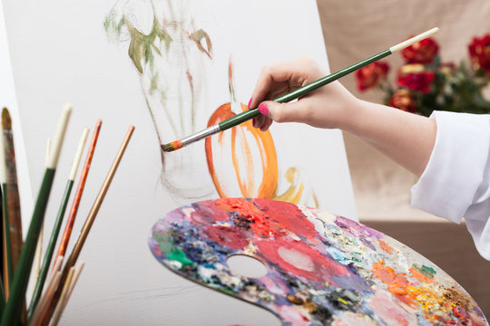

K.I.S.S Arts Club is an independent art program. For over 45 years, K.I.S.S has provided a positive environment for aspiring artists to attain a quality visual arts education. The Arts club offers students a unique opportunity for hands-on studio learning and exposure to artistic trends in drawing, painting, sculpture, collage, printmaking, mixed media, digital arts and photography, portfolio development, and youth programming.
At K.I.S.S, artists teach students of all levels with both traditional and contemporary approaches offering an array of courses to choose from that will further develop one’s artistic vision and ability at any level.

If you’re looking for something unique for your company event or to create a team building day, an art workshop might be just the thing for you to boost employee morale and encourage creativity in the workplace. These can be customized to fit the needs and interests of your group.
We also welcome youth student groups, supporting their curriculum or introducing something new to their art education.
In normal circumstances, we can conduct your workshop in our large, bright, fully-equipped studios led by a K.I.S.S. faculty member or, they can be held on-site at your workplace or school.